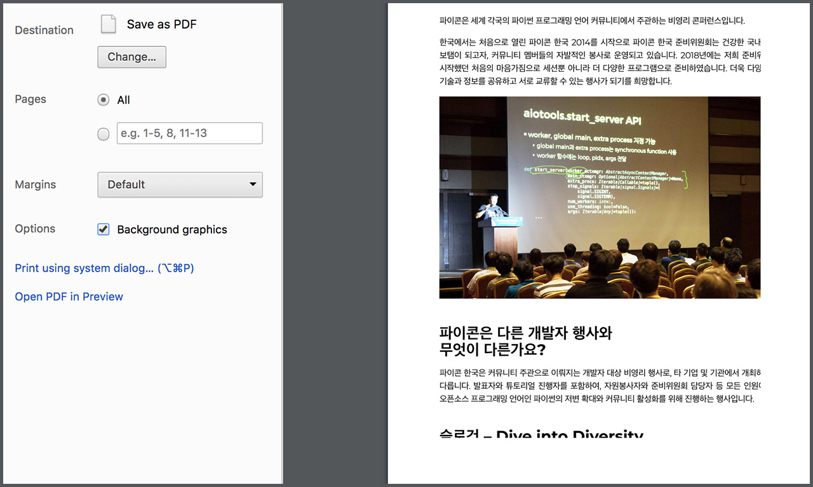
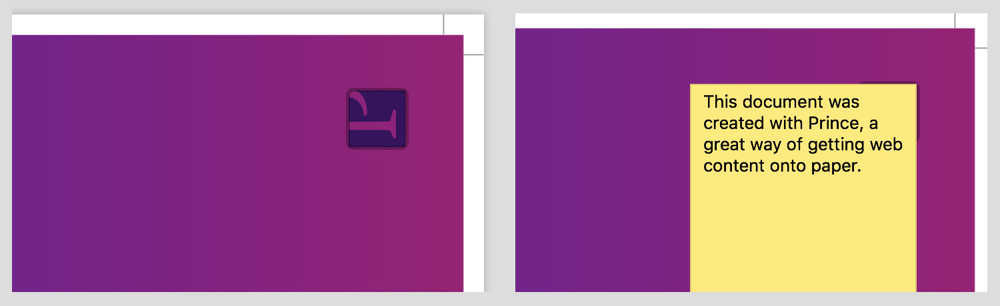
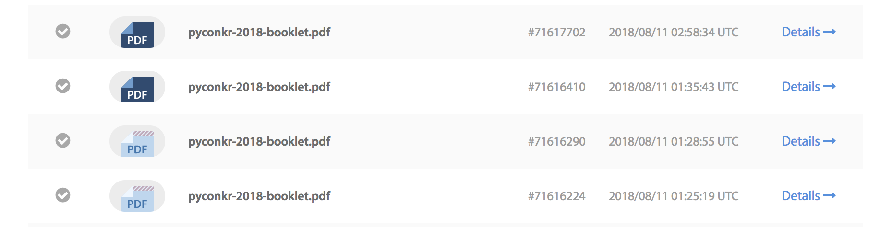
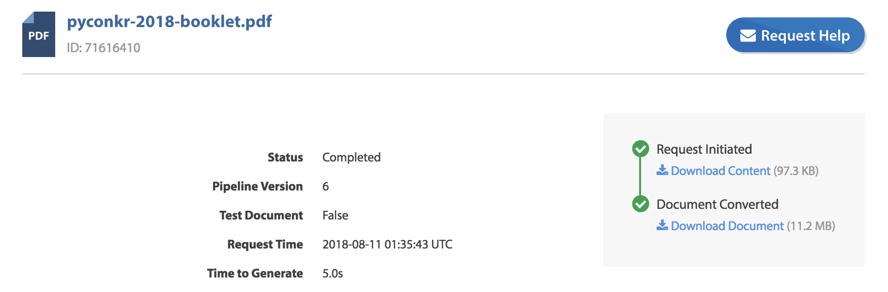
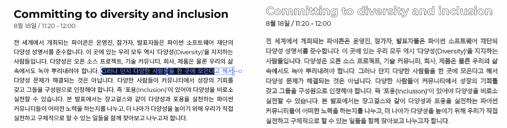
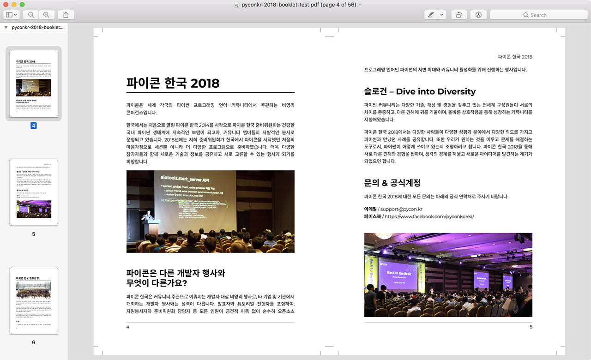
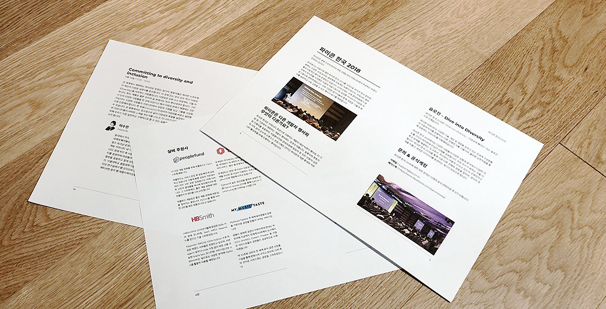

PyCon Korea
파이콘 한국은 매년 파이썬 사용자들이 모이는 행사로, 올해로 다섯번째를 맞이하였다. 나는 2014년부터 이 행사를 준비하는데 같이 하였으나, 같은 사람이 너무 오랫동안 같은 일에 관여하면 오히려 좋지 않은 영향을 줄 것으로 생각하여 작년까지만 참여하고 그만두었다. 올해는 처음으로 일반 참가자로 파이콘 한국에 참여하려고 했다. “Everybody pays”의 구호 아래 모든 참가자가 가능하면 동등한 입장에서 즐기는 행사를 만들고자 했지만, 아무래도 준비위원회와 자원봉사자는 행사 당일에 다른 참가자들처럼 원하는 발표 프로그램을 듣거나, 다른 참가자와 네트워킹을 하는 것은 사정상 어려운 부분이 많다. 항상 어제보다 나은, 작년보다 나은 행사와 커뮤니티를 위해 노력하는 분들에게 감사할 따름이다.
개인 후원으로 티켓을 구입하고 행사를 기다리던 중, 파이썬 사용자 모임 분들과 저녁을 같이 먹다 파이콘 준비위원회에 일손이 좀 부족하다는 얘기를 듣고, 내가 할 수 있는 일 가운데 ‘프로그램북’ 제작을 도와드리기로 했다. 프로그램북은 파이콘 참가자들에게 모두 지급되는 가방에 함께 제공되며, 행사에 대한 전반적인 정보를 담고 있다.
많은 사람이 스마트폰을 가지고 있는 요즘, 홈페이지에 접속하면 모든 정보를 확인할 수 있는데, 종이로 만든 구식 프로그램북이 왜 필요할까? 다른 행사에서 만들어왔고, 우리도 2015년부터 만들어왔기 때문에 만들어야 하나? 의문이 들었다. 종이로 만들어진 정보의 의미에 대해서는 여러 의견이 있겠지만, 내가 생각하는 종이 프로그램북이 주는 장단점은 다음과 같다.
- 장점
- 빠르게 훑어보기가 가능하다.
- 후원사가 각자의 안내 홍보문을 넣어주는 것보다는 깔끔하다.
- 후원사에게 제공하는 혜택으로 사용할 수 있다.
- (사소하지만) 기념품의 의미가 있다.
- 단점
- 종이를 낭비한다.
- 현장에서 변경된 정보를 반영하지 못한다.
By code
파이콘 한국은 파이썬 사용자들의 축제이기 때문에, 일반적으로 종이책을 만드는 방식 – Adobe InDesign 등의 전문 제작 프로그램 – 이 아닌, 파이썬을 활용하여 제작하면 좋겠다는 생각이 들었다. 이전 회사에서 인쇄/제본 관련 업무를 해본 적이 있어, 책을 만드는데 필요한 요소와 구성은 익숙한 편이라 작업에 도움이 되었다. 기본적으로는 CMYK 색상을 가진 PDF를 만들면 어떻게든 출력해낼 수 있다.
레이아웃과 스타일을 다루는 언어로는 웹 페이지를 만드는 기술인 HTML과 CSS를 그대로 사용했다. 웹 페이지는 일반적으로 연속된 페이지로 구성되기에, CSS의 Paged Media를 사용해서 종이책에 걸맞은 페이지 단위의 구성을 할 수 있다. 다음의 링크들을 통해 기본을 익히고 현재 생태계를 이해하는데 도움이 되었다.
- https://print-css.rocks/
- Making books with HTML + CSS — a look at Vivliostyle
- CSS Paged Media Module Level 3
프로그램북을 A5 크기로 제작할 예정이므로, 다음과 같이 기본 레이아웃을 지정했다. CSS로 도련이나 재단선 지정과 출력을 할 수 있으므로, 전문 제작 프로그램에서 제공하는 방식 그대로 페이지를 설정할 수 있다.
@page {
size: 148mm 210mm; /* A5 */
margin: 56pt 50pt; /* 기본 여백 */
marks: crop; /* 재단선 출력 */
prince-bleed: 3mm; /* 도련 3mm */
prince-trim: 3mm; /* 재단 3mm */
}
/* 좌우 페이지를 다르게 지정할 수 있다 */
@page:right {
margin: 56pt 46pt 56pt 50pt;
}
@page:left {
margin: 56pt 50pt 56pt 46pt;
}
일반적으로 사용하는 크롬과 같은 웹 브라우저에서 Paged Media CSS를 지원한다면, 마치 인쇄 모드에서 출력되는 것과 같이 잘 표현될 것으로 기대했는데, 전혀 그렇지 않았다. 스타일은 잘 표현되지만 레이아웃은 전혀 반영되지 않았다. 이 상태로도 열심히 수정하면 적당한 수준의 결과물을 얻을 수는 있겠지만, 괜히 EPUB 표준이나 뷰어가 별도로 존재하는 것이 아니었다. HTML/CSS를 PDF로 변환하는 전용 컨버터를 이용해서 변환해야 책 같은 모습을 얻을 수 있다.

DocRaptor and Prince
컨버터는 여러 종류가 있는데, 나는 DocRaptor (https://docraptor.com/)를 사용해서 변환하였다. DocRaptor는 HTML을 PDF나 Excel 형식의 파일로 변환해주는 서비스를 온라인으로 제공한다. 다른 도구들이 서버당 라이센스 가격을 받는 것에 비해, 변환한 만큼의 비용만 지불하고 사용할 수 있어, 취미로 사용하는 경우에 적합한 도구로 생각된다. 뿐만 아니라, 전통적이며 괜찮은 컨버터중 하나인 Prince를 이용해 PDF 변환을 수행하고 있는 것도 마음에 들었다. (참고: DocRaptor vs PrinceXML)
Prince는 Windows, OS X, Linux 등 다양한 플랫폼을 위한 바이너리를 제공하여 직접 설치하여 사용할 수 있다. 비상업적 개인적인 이용에 한해, 작은 PDF 워터마크를 포함하는 수준으로 무료 사용을 허용하고 있다.

파이콘 한국은 비영리 목적의 행사이지만, 개인적인 이용이 아니라 생각되어, DocRaptor가 제공하는 가장 낮은 서비스인 Basic Plan으로 가입하여 사용했다. 월 125회의 변환이 가능하지만, 테스트 목적의 변환은 무제한으로 할 수 있어 사용에 지장이 있지는 않았다. 테스트용으로 변환을 요청하면 역시 워터마크가 포함되어 변환된다.

Build with API
DocRaptor API를 통해 빌드 시스템을 구축하는데 사용할 수 있다. 온라인에서 영수증을 발행하거나 보고서를 출력해서 첨부하여 보낼 때 사용할 수 있다. 단순한 HTTP Post 요청이라 직접 만들어도 되지만, 편리한 사용을 위해 언어별 라이브러리도 제공한다. Python용 라이브러리인 docraptor-python도 제공하고 있어, 아래와 같이 호출하고 결과를 파일로 저장하면 된다.
import docraptor
docraptor.configuration.username = "API_KEY_HERE"
doc_api = docraptor.DocApi()
response = doc_api.create_doc({
# 테스트 여부
"test": True,
# 변환할 내용
"document_content": "<html><body>Welcome to PyCon Korea</body></html>",
# 또는 URL을 입력할 수 있다
# "document_url": "https://some_url_on_internet",
# 저장할 이름
"name": "pyconkr-2018-book.pdf",
# 파일 형식
"document_type": "pdf",
})
로컬에서 변환 결과를 확인하기 위해 테스트로 빌드할 경우에는 Prince를 사용해서 빨리 결과를 확인하고, 최종본을 만들 때 DocRaptor를 사용하는 식으로 작업하여 시간을 절약할 수 있었다. 사용한 글꼴의 문제 등으로 결과가 다를 수 있는데, DocRaptor에서 제공하는 요청별 로그 페이지를 통해 문제를 해결하는데 도움이 되었다.

...
Sat Aug 11 01:35:44 2018: loading font: https://lqez.github.io/pyconkr-2018-booklet/fonts/NotoSans-DemiLight.otf
Sat Aug 11 01:35:44 2018: used font: LiHei Pro, Medium
Sat Aug 11 01:35:44 2018: loading font: https://fonts.gstatic.com/s/robotomono/v5/L0x5DF4xlVMF-BfR8bXMIjhLq3o.ttf
Sat Aug 11 01:35:44 2018: used font: Roboto Mono, Regular
Sat Aug 11 01:35:44 2018: Resolving cross-references...
Sat Aug 11 01:35:45 2018: stats: total_page_count: 56
Sat Aug 11 01:35:45 2018: finished: success
Sat Aug 11 01:35:45 2018: ---- end
Finalize
원래는 파이콘 한국 홈페이지의 데이터를 Scrapy와 같은 웹 페이지 크롤링 도구로 읽어 사용하려고 했으나, 인쇄물의 크기 제약 등으로 다른 데이터를 써야 하는 문제가 있어 진행하지 않았다. 하지만 데이터를 일일이 HTML로 작업하는 것은 원래 목적에 충실하지 않으니, 데이터를 파이썬 코드로 작성하고 이를 Jinja 템플릿 엔진을 이용해 최종 HTML 파일을 만들도록 하였다.
이렇게 생성된 PDF를 바로 업체에 보내 인쇄할 수 있으면 좋겠지만, 여러가지 문제로 바로 보낼 수는 없었다.
- 인쇄소에 보내려면 문자열을 모두 벡터 도형으로 바꾸는
Create Outlines작업이 필요하다. 글꼴 정보가 존재하는 상태로 전달되면, 문서 내에 사용된 글꼴이 없는 경우 문제가 되므로 반드시 도형으로 변환해야 한다. - DocRaptor를 통해 생성된 PDF를 수정하기 위해 Adobe Illustrator 등의 도구에서 불러오면, 문자열이 깨져서 표현되는 경우가 있다. 이 문제를 해결하기 위해 PDF를
Archivable PDF/A형식으로 변환해야 한다. https://forums.adobe.com/thread/1158190 참조. - 표지는 업체에서 원하는 템플릿 위에 얹혀 전달해야 한다. 책 두께에 따라 책등(세네카)의 크기가 달라지는데, 종이 두께와 매수로 달라지는 부분이므로 계산된 두께 만큼을 늘려 작업해야 한다.

한글 글꼴로 Google Fonts Early Access에서 제공하는 Noto Sans Korean을 그대로 사용하려고 했지만, DocRaptor 쪽에서 WOFF2 형식을 지원하지 않아, EOT와 같은 기존 글꼴 형식을 사용하도록 변경해야 했다. 경량화된 웹 폰트를 만들어둔 분이 있어 편리하게 사용할 수 있었다. 웹 글꼴과 관련되어서는 구글에서 작성한 ‘웹 글꼴 최적화’를 참고.

And,
Adobe InDesign 등의 전문 도구로 작업하는 쪽에서 보자면, 결과물이 조악하고 부족한 부분이 있을 것이다. 실제 작업한 시간을 생각해봐도, 처음부터 전문 도구로 시작하여 작업한 시간만큼 걸린 것은 사실이다. 마우스나 터치패드를 클릭하는 대신 키보드를 통해 레이아웃을 설정한 것에 불과하다고 볼 수도 있지만,
- 작은 수정사항이 있을 때, 전문 도구를 다루는 사람이 없거나, 프로그램이 없어도 누구나 수정해서 빌드하여 결과물을 뽑아낼 수 있다. 물론 프로그래밍을 더 어려워하는 사람이라면 해당하지 않는 부분이지만, 파이썬 커뮤니티라면 이득이 있다.
- 전반적인 수정을 할 때 편리하다. 전문 도구에서도 초반에 서식을 잘 이용하면 전체적인 수정을 손쉽게 할 수 있지만, 코드로 하는 것이 개인적으로는 더 명확하고 쉬웠다.
- 데이터를 대량으로 입력할 때 유리하다. Adobe InDesign에서도 Data merge 기능을 통해 외부로부터 데이터를 불러와 본문에 삽입, 대체하는 것이 가능하지만 파이썬 프로그래머라면 Jinja를 다루는 것이 더 편리하다.
한 권을 만드는 것이 아니라 여러 권을 만들게 된다면 코드로 빌드할 수 있는 환경이 얻는 이점이 더 분명해질 것으로 생각한다. 행사 일정에 맞추느라 Paged Media 에 대한 충분한 이해와 깔끔한 편집을 못 한 것이 아쉽다.
